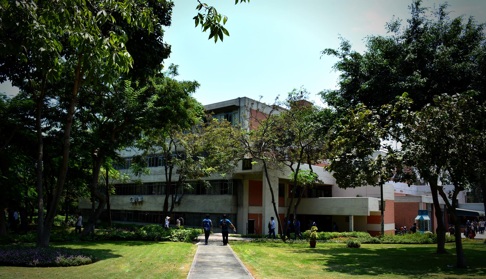
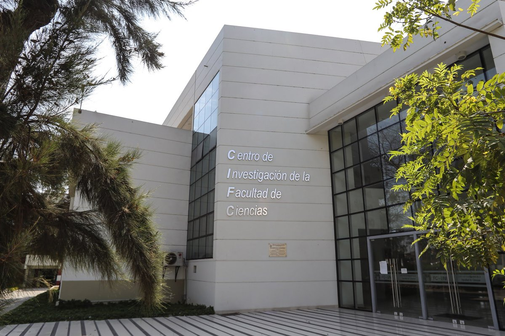
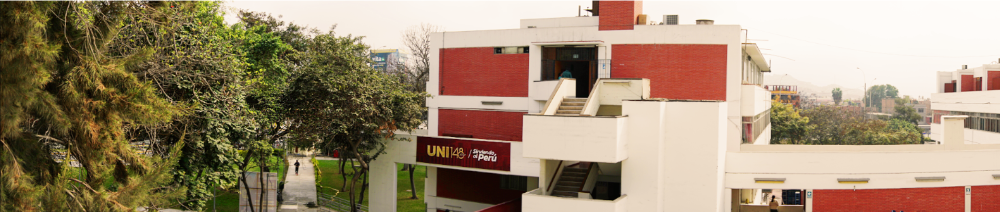

Doctorando en Física Cuántica, CEA Paris-Saclay. Investiga circuitos cuánticos superconductores (Quantronics Group). Bachiller en Física, UNI 2019.
Universidad Nacional de Ingeniería · Lima, Perú
Facultad de Ciencias
Forma matemáticos, físicos, químicos e informáticos con base científica sólida. Sus egresados investigan en universidades y laboratorios del mundo.

Sobre la facultad
La Facultad de Ciencias de la UNI tiene sus antecedentes en la antigua Facultad de Ciencias Físicas y Matemáticas. Tras una reorganización institucional en 1983 adoptó su estructura actual con las escuelas de Física, Matemática y Química, y luego sumó Ingeniería Física (1999) y Ciencia de la Computación (2009).
Su misión es "formar investigadores en ciencias con enfoque integrador de ciencias puras y aplicadas, mediante excelencia académica, innovación científica y responsabilidad ética". El decano actual es el Dr. Heriberto A. Sánchez Córdova (desde 2023).
La facultad cuenta con el Instituto de Investigación IIFUNI, más de 20 grupos de investigación activos, la Biblioteca FC equipada con más de 17,800 volúmenes y el sistema UNI-KOHA, además de programas de posgrado en Física, Matemática, Química y Computación.

Guía y Recursos Estudiantiles
Información práctica y herramientas colaborativas diseñadas para estudiantes de la Facultad de Ciencias.
Guía del Primer Ciclo
Todo el proceso de inducción paso a paso: activación de correos, ficha socioeconómica, examen médico y matrícula.
Instalaciones FC
Conoce la Biblioteca FC, servicios de préstamo, sala de lectura, catálogo virtual AlphaCloud e infraestructura universitaria.
Trámites y Reglamentos
Información simplificada sobre créditos mínimos de egreso (208 créditos), tutorías y reglamentos de matrícula.
Recursos y Drives
Drives compartidos con exámenes pasados, guías de laboratorio y enlaces a software científico recomendado.
Las 5 escuelas profesionales
Todas tienen una duración de 5 años (10 semestres) y requieren aproximadamente 208 créditos para egresar.

Egresados en el mundo
Estudiantes que salieron de esta misma facultad e investigan hoy en instituciones científicas de primer nivel.
Investigador del CNRS (Instituto Jean Lamour, Nancy). Especialista en espintrónica y nanomagnetismo. Más de 50 publicaciones. Medalla CNRS. Bachiller UNI 1999.
Doctorando en NeuroSpin, Université Paris-Saclay. Trabaja en inteligencia artificial y visión computacional. Becario Embassy France.
¿Necesitas ayuda o tienes consultas?
Si eres ingresante y no sabes por dónde empezar, o si tienes dudas sobre trámites o recursos académicos, cuentas con la comunidad de la Facultad.
Preguntas Frecuentes
Respuestas rápidas sobre matrícula, convalidación de cursos, promedios ponderados y reglamentos sin burocracia.
Grupos de Apoyo
Conecta con el Centro de Estudiantes (CEFC) o agrupaciones estudiantiles como ACECOM o AEDICI para recibir orientación directa.
Recursos Académicos
Accede a drives de exámenes pasados, guías de laboratorio del ciclo básico y herramientas recomendadas de software científico.